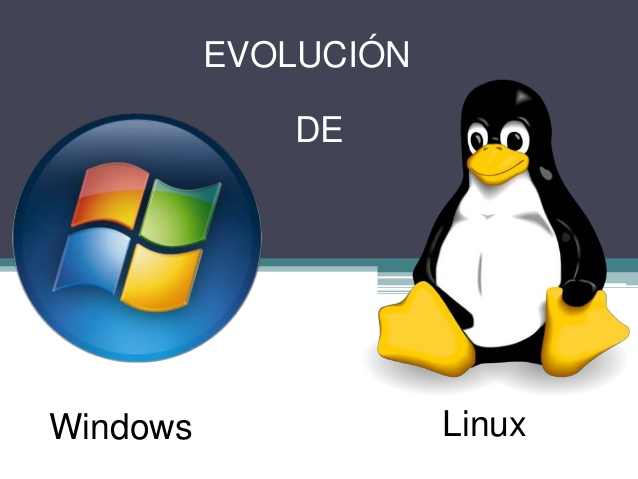

Introducción

En el presente OVI se explicará qué son los sistemas operativos, cuáles son los principales en la actualidad, sus aplicaciones, y lo más importante, su papel en el mundo y su evolución a través del tiempo.
Con esto buscamos lograr mejorar el entendimiento sobre el tema en su estadía en la UNAD.
Agredecemos su tiempo y esperamos poder lograr hacer que el conocimiento llegue de forma fácil y rápida.
¿Qué son los sistemas operativos?
Son el conjunto de aplicaciones (entiendase como software) que se encargan de trabajar en conjunto para administrar adecuadamente las funciones de entrada y salida de un ordenador (I/O)
En otras palabras, se entiende como todo el software que es capaz mediante una serie de instrucciones lógicas de controlar el hardware.
Ejemplo
Desde otro punto de vista, un poco quizá más cotidiano podemos tener lo siguiente:
En el cuerpo humano, la mente es la que controla al cuerpo.